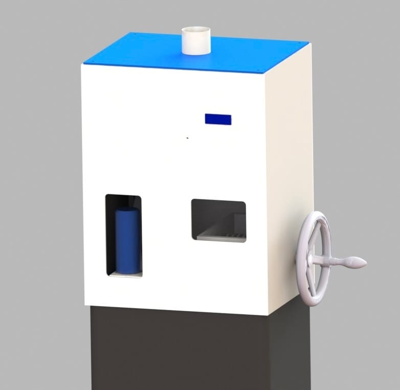

MSc Robotics · BSc Mechanical Engineering · TU Delft
I build and test robotic systems across hardware and software.
I enjoy turning technical ideas into working prototypes — combining mechanical design, electronics, computer vision and software, then learning from testing what works and what needs to change.
Selected work
Projects
Robotics, computer vision, embedded systems and rapid prototyping.

Camera-Based Hand-Trainer Motion Tracking
MSc thesis: a low-cost onboard tracking system for measuring compliant hand-trainer motion in real time.
View project →
Project BB (VR-Controlled Beach Robot)
Remote robot platform combining VR teleoperation, camera feedback, a robotic arm and onboard safety sensing.
View project →
Phosphoenix Vision Pipeline
Custom-trained segmentation and visual-processing pipeline for navigation-oriented phosphene representations.
View project →
Can Crusher
Compact automated can-processing prototype combining sensing, motor control, UI and a custom sorting mechanism.
View project →About
Curious, hands-on and happiest when something actually moves
My background combines a BSc in Mechanical Engineering with an MSc in Robotics from Delft University of Technology. That combination shaped the way I like to work: understanding the physical system first, then using electronics and software to make it do something useful.
I am naturally curious and tend to learn by building. I enjoy unfamiliar technical problems, quick prototypes and the iterative process of testing, debugging and improving a design. The projects I enjoy most sit somewhere between mechanics, embedded hardware and intelligent software rather than inside just one discipline.
Contact
Interested in working together?
I'm interested in robotics and R&D roles where hardware and software come together.